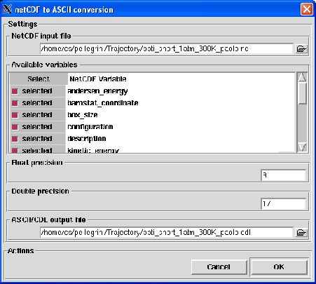

Next: Convert ASCII to NetCDF
Up: The File menu
Previous: Frame snapshot
Contents
Convert NetCDF to ASCII
The Convert NetCDF to ASCII option allows the conversion of any kind of NetCDF file to a network Common Data Language (CDL) file [77].
Clicking on it, the dialog shown in figure 4.13 will pop up.
Figure 4.13:
The dialog used to convert files in NetCDF format to CDL format.
|

|
To use this functionnality, the ncdump program [36] provided with the NetCDF library must be installed and the path to the
ncdump executable must be defined in the nMOLDYN preferences. If ncdump is not installed,
this functionnality will be disabled.
To perform the conversion, the following input fields must be filled:
- NetCDF file
Format: string
Default: None
Description: a NetCDF file must be provided for the conversion. If a NetCDF file is currently loaded (a MMTK
trajectory or other kind of NetCDF file), it will be proposed by default for conversion. Once the NetCDF file is loaded
all the variables found in the NetCDF file will be displayed in the Available variables field.
- Available variables
Format: Not an editable field
Default: None
Description: this field displays all the variables contained in the NetCDF file. It contains two columns:
the first one displays the checkbuttons that will allow to unselect/select which NetCDF variable (displayed on the right column)
should be considered for conversion.
- Float precision
Format: integer
Default: 9
Description: this field stores the precision at which floating numbers will be written in the ASCII/CDL output file.
- Double precision
Format: integer
Default: 17
Description: this field stores the precision at which double numbers will be written in the ASCII/CDL output file.
- ASCII/CDL output file
Format: string
Default: None
Description: this field stores the name of the ASCII/CDL output file.
Next: Convert ASCII to NetCDF
Up: The File menu
Previous: Frame snapshot
Contents
pellegrini eric
2009-10-06